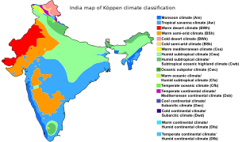

 |
Територія Індії лежить у субекваторіальному кліматичному поясі, регіон Джамму і Кашмір — у субтропічному високогірному. Влітку переважають екваторіальні повітряні маси, взимку — тропічні. Влітку вітри дмуть від, а взимку до екватора.Сезонні амплітуди температури повітря незначні, зимовий період не набагато прохолодніший за літній. У літнє-осінній період з морів та океанів часто надходять тропічні циклони, на сході й в центрі субконтиненту взимку виразний сухий сезон, недостатнє зволоження. Індія є членом Всесвітньої метеорологічної організації (WMO), в країні ведуться систематичні спостереження за погодою. |
Практично вся територія Індії знаходиться в субекваторіальному поясі. Дощі в Індії приносить проникаючий з боку Індійського океану літній мусон, який посилюється на початку червня на західному узбережжі і приблизно в середині червня на східному узбережжі - в Бенгалії. При проходженні над Аравійським морем і Бенгальською затокою мусони насичуються вологою і рухаються над Індією в північно-західному напрямку. Найбільшою мірою мусонний клімат виражений на узбережжі Аравійського моря. У найхолодніший період (з грудня по лютий) середня мінімальна температура повітря становить +19 — +21°С, середня максимальна +28 — +30°С. У цей же період випадає найменша кількість опадів. Найспекотніший час - з травня по червень, коли середня максимальна температура складає +30 — +33°С. Сьогоднішні підвищення рівня Світового океану, посилення діяльності циклонів, підвищення температур навколишнього середовища, мінливість в випаданні опадів і інші наслідки глобального потепління надають або найближчим часом вплинуть на територію Індії. Тисячі людей були змушені покинути свої будинки в найбільш низинних частинах островів Сундарбана. Підвищення температур в районі Тибетського нагір'я призводить до того, що багато гімалайські льодовики відступають, що може бути причиною зменшення витрати води таких річок, як Ганг, Брахмапутра та Джамуна, які беруть початок в цих льодовиках . Варто зазначити, що від повноводності цих річок безпосередньо залежить життя мільйонів фермерів на рівнинах півночі країни. У 2007 році Всесвітній фонд дикої природи повідомив, що річка Інд може почати вичерпуватися з тієї ж причини. Сільське господарство Індії практично повністю залежить від опадів, принесених мусонами. Будь-які збої в роботі мусонів призводять до нестачі води і як наслідок - до засух, які, як правило, є причиною зниження врожайності. Це особливо вірно для таких схильним до посух районів країни, як східна Махараштра, північна Карнатака, Андхра-Прадеш, Орісса, Гуджарат і Раджастхан. У минулому сильні посухи час від часу ставали причиною масового голоду. Найбільш значущі приклади з історії - бенгальський голод 1770 роки; голод 1876-1877 років, що призвів до загибелі більше 5 мільйонів чоловік; голод 1899-го (понад 4,5 млн жертв); бенгальський голод 1943 роки (більш 5 млн загиблих) [30]. Всі ці епізоди катастрофічних засух пов'язані з явищами, відомими як Ель-Ніньо. Проте, Ель-Ніньо може викликати і зворотний процес. Так, в 1997-1998 роках температура поверхневого шару Індійського океану зросла на 3 ° С, що стало результатом більш сильного випаровування і незвично вологої погоди по всій Індії. Причиною подібних явищ є зміна областей тиску в південній частині Індійського океану і пов'язана з цим тяга сухого повітря з Центральної Азії. Саме ці зворотні потоки повітря під час, коли повинен приходити літній мусон, і є причиною індійських посух. Ступінь зміни температури поверхні центральної частини Тихого океану безпосередньо залежить від ступеня посухи в Індії | |